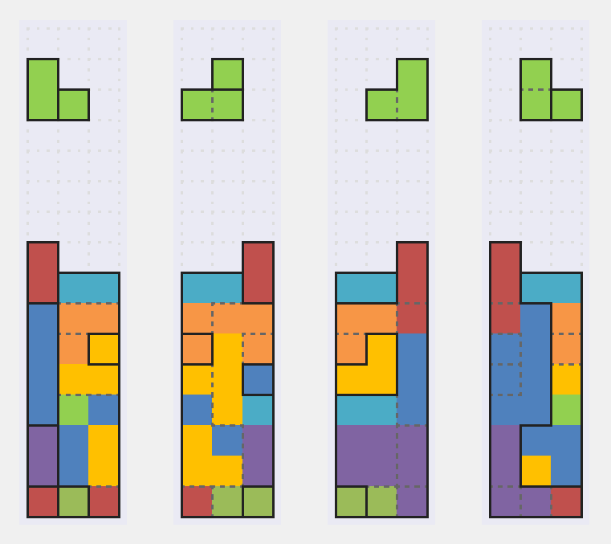
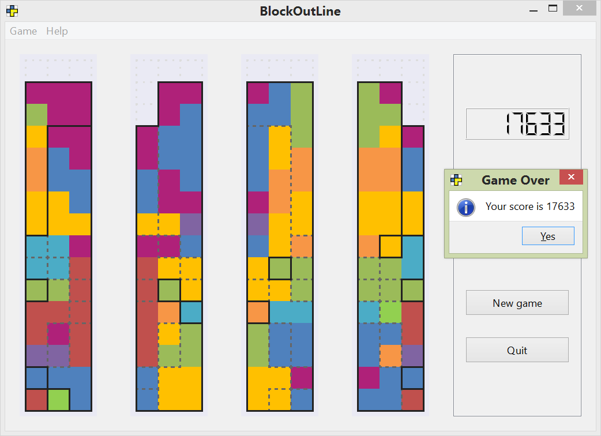

BlockOutLine游戏
BlockOutLine是我最近写的一个3D版的类俄罗斯方块游戏。游戏的名字是由Blockout和outline（轮廓线）组合成的。

Blockout算是正宗的3D俄罗斯方块（可以试试3dtris，一个很赞的flash实现），我这个BlockOutLine的玩法规则和Blockout一模一样（填满每层后消去方块），但是游戏者看到的界面并非原版的鸟瞰透视视图，而是后/左/前/右四个侧面的2D投影。这个设定的意图就像下面这个xkcd漫画展示的那样，假设你是生活在二维世界中的flatland居民，该怎么玩3D俄罗斯方块呢？那就只有靠平面投影来反推了。

绘制工程设计图（建筑/机械制图）实际上是在用2D投影表达3D构件，相反地，识图则是解读2D图面信息在大脑中翻译成3D形体。二者都需要一定的空间想象能力。所幸这是可以训练的：有研究表明，虽然通常女性的空间能力测试分数比男性低整整一个标准差，但只要玩几个小时第一人称射击游戏差异就会明显缩小，更惊人的是这种能力提升可以保持到5个月之后1！伦敦出租车司机长期在错综复杂的街道穿行，以至于大脑结构异于常人2。另有传闻说魔方其实就是建筑学院教授Ernő Rubik为了培养学生的空间思维而发明的教具。
对于工程师来说BlockOutLine的训练更直接，因为这里图形的画法直接沿用了工程制图的约定，用实线/虚线分别表示可见/不可见轮廓。推荐未来的建筑工程师来游戏里体验搬砖的感觉。还有，本游戏玩起来的难度比想象的大，沉迷于Flappy bird无法自拔的自虐型玩家也不要错过哦。
我目前的最高分：

为什么只有3x3模式？因为对于普通人来说3x3的难度已经足够了，而且4x4以上有很多情况都无法反推出3D布局（毕竟2D重建3D本身就是个ill-posed问题）。如果有人能轻松玩转4x4甚至挑战5x5以上的难度，那么请直接和江苏卫视最弓虽大脑节目组联系（并接受详细的心理/精神检查）。
源代码托管在GitHub上。打包好的Windows可执行文件在这里下载。
Feng, Jing, Ian Spence, and Jay Pratt. “Playing an action video game reduces gender differences in spatial cognition.” Psychological science 18.10 (2007): 850-855.↩︎
Maguire, Eleanor A., Katherine Woollett, and Hugo J. Spiers. “London taxi drivers and bus drivers: a structural MRI and neuropsychological analysis.” Hippocampus 16.12 (2006): 1091-1101.↩︎